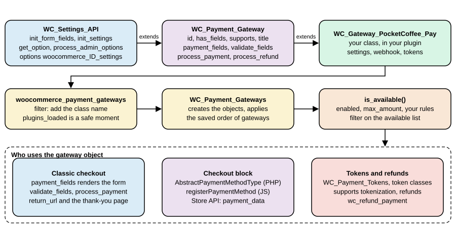
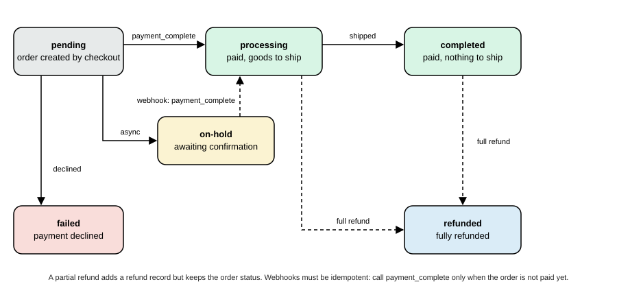
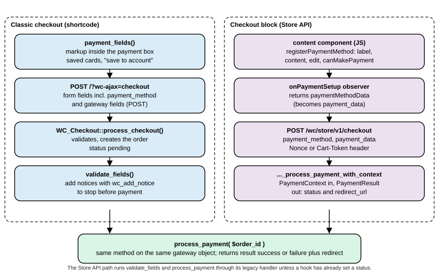

Payment Gateways
|
This content was generated with the assistance of AI and should be verified against the official documentation before being relied on in production. |
A payment gateway is the part of a WooCommerce store that turns an order into money: it decides which payment methods the shopper sees, takes the payment (or hands the shopper to a provider that does), reports the result back to the order, and later refunds it. This page explains the gateway model of WooCommerce 11.2.1 on WordPress 7.1.3 (checked on 2026-10-27), shows every method, property, hook and option a gateway author meets, and builds a complete card gateway for the Pocket Coffee shop that works with both the classic shortcode checkout and the Checkout block. It also covers saved cards (payment tokens), refunds, the signed webhook that confirms asynchronous payments, WooPayments (the official gateway) and the PCI DSS obligations that follow from the choices made in code.
The running example is the Pocket Coffee shop of the other pages in this section (single-origin beans in 250 g and 1 kg bags, a starter kit, euros, a Coffee Club). The plugin pocket-coffee-payments registers a card method called Pocket Coffee Pay and a second, minimal method that is paid by invoice. No payment account may be created for documentation, so the "provider" behind Pocket Coffee Pay is a small deterministic stub inside the plugin that approves, declines, keeps pending and refunds based on test tokens. The WooCommerce side of the code (gateway class, settings, tokens, refunds, webhook, block registration, Store API processing) is real and is the same code a live gateway needs. Only the HTTPS calls to a provider and the provider’s browser SDK are replaced by the stub. Everything shown was installed in a disposable WordPress 7.1.3 and WooCommerce 11.2.1 Docker stack (PHP 8.3, MariaDB 11.8, High-Performance Order Storage on, Cart and Checkout blocks), and the outputs pasted below were produced there. The last section lists what was run and what could not be.
The page follows Cart and Checkout Blocks, uses the Store API for the shopper side of every test and the REST API for the merchant side, and relies on HPOS for the order objects. Shipping methods, which sit next to payment methods in the checkout, are in Shipping Methods. The language is PHP (see the PHP section of this site) with a little JavaScript for the block; the webhook uses the hashing functions described in PHP Cryptography, Hashing and Passwords.
The payment landscape
Four kinds of gateway
The core documentation sorts gateways by where the card data is entered, which decides how much security work falls on the store.
| Kind | How it works | Typical examples |
|---|---|---|
Form based |
The shopper clicks a button and is redirected to the provider’s own page, then comes back. The store never sees card data. |
PayPal Standard, hosted payment pages |
iFrame based |
The provider’s page is loaded inside an iframe on the store’s checkout. |
Older embedded forms |
Direct |
The payment fields are shown on the checkout page and the payment happens when the shopper presses "Place order". Today this is almost always done with provider-hosted fields or an SDK that turns the card into a token in the browser. |
Card gateways with hosted fields (Pocket Coffee Pay in this page, WooPayments, Stripe) |
Offline |
No online payment is made; the order waits until the merchant confirms the money. |
Cheque, bank transfer (BACS), cash on delivery |
Form and iFrame gateways post data off-site, so there are fewer security issues for the store; direct gateways need the server security (HTTPS, a hardened host) and possibly a higher level of PCI DSS compliance. The section PCI DSS and security returns to this.
What WooCommerce 11.2.1 ships
The directory includes/gateways of the plugin contains the four gateways that are part of core and two helper classes. BACS, cheque and cash on delivery are offline gateways; PayPal Standard redirects the shopper to PayPal. WC_Payment_Gateway_CC is a helper that renders the (deprecated) default credit card form and WC_Payment_Gateway_ECheck the equivalent for bank account details; they are not registered gateways. On the test store the list of gateways, read with WP-CLI before any Pocket Coffee code was activated, was:
wp wc payment_gateway list --user=admin --fields=id,title,enabled,method_title --format=tableid title enabled method_title bacs Direct bank transfer 1 Direct bank transfer cheque Check payments Check payments cod Cash on delivery 1 Cash on delivery
PayPal Standard does not appear in that list because WooCommerce 11.2.1 loads it only on stores that already have it enabled or already have PayPal orders (the should_load() method of WC_Gateway_Paypal stores that decision in the setting _should_load); new stores are pointed at the PayPal and WooPayments options of the Payments settings page instead. The 11.x changelogs list continued PayPal Standard work on the Orders v2 API, and a long list of deprecated WC_Gateway_Paypal_* helper classes that moved into the namespace Automattic\WooCommerce\Gateways\PayPal.
Everything else is an extension: WooPayments, Stripe, Mollie, Square, Redsys and the national gateways a Spanish shop needs are plugins that extend WC_Payment_Gateway exactly as this page does. The merchant manages them in WooCommerce > Settings > Payments, which builds its list of providers from each gateway’s $this->icon, method_title and method_description (see the table below).

The gateway class
Skeleton and registration
Payment gateways are plugins. The class must exist after the plugins are loaded, must extend WC_Payment_Gateway (itself an extension of WC_Settings_API, which provides the settings form and storage) and must be announced to WooCommerce by adding its class name to the filter woocommerce_payment_gateways. WC_Payment_Gateways::init() then instantiates every class (strings are turned into objects with new), orders them with the option woocommerce_gateway_order (the order the merchant sets by dragging in the admin) and keeps the ones that really extend WC_Payment_Gateway.
The shortest possible gateway therefore looks like this (the docs call the registration function add_your_gateway_class):
add_action( 'plugins_loaded', 'init_your_gateway_class' );
function init_your_gateway_class() {
class WC_Gateway_Your_Gateway extends WC_Payment_Gateway {}
}
function add_your_gateway_class( $methods ) {
$methods[] = 'WC_Gateway_Your_Gateway';
return $methods;
}
add_filter( 'woocommerce_payment_gateways', 'add_your_gateway_class' );The Pocket Coffee plugin does the same thing in a closure and guards on class_exists( 'WC_Payment_Gateway' ) so that the plugin does not fatal if WooCommerce is deactivated (the plugin header also carries Requires Plugins: woocommerce, which makes WordPress refuse to activate it without WooCommerce). The complete file is in The Pocket Coffee Payments plugin.
Properties set in the constructor
The constructor defines the identity of the gateway, loads its settings and registers the hook that saves them. These are the properties that WooCommerce 11.2.1 reads (from includes/abstracts/abstract-wc-payment-gateway.php).
| Property | Type | Meaning |
|---|---|---|
|
string |
Unique ID, lower case with underscores ( |
|
string |
URL of an image shown next to the title at checkout (the classic checkout wraps it in an |
|
bool |
|
|
string |
Name shown to the merchant in the admin. |
|
string |
Description shown to the merchant in the admin. |
|
string |
Name shown to the shopper. Normally loaded from the setting |
|
string |
Text shown to the shopper when the method is selected ( |
|
|
Set by |
|
string[] |
The features the gateway implements, tested with |
|
number |
Maximum order total; |
|
string |
Replaces the text of the "Place order" button of the classic checkout when the method is selected. |
|
bool |
Since 10.6.0. Tells the classic checkout that the gateway registers its own place-order button from JavaScript, so that the default button is not shown for a moment on page load. It is only about avoiding a flash of the default button; the JavaScript registration is what enables the custom button. |
|
string |
A |
|
string |
Label of the "use a new payment method" radio button of the saved payment methods list. |
|
string |
ID of a payment button of a gateway that supports |
|
array, string |
Legacy country restriction fields of the base class. |
The Payments settings page shows each provider with an icon, a title and a description that it reads from the gateway. The rules, taken from the core documentation, are:
| Detail | Source | Rule |
|---|---|---|
Icon |
|
A valid image URL, preferably square. If the value is empty, invalid or an |
Title |
|
If empty, the provider falls back to the customer-facing |
Description |
|
If empty, the provider falls back to the customer-facing |
Use method_title and method_description for short admin copy and title and description for what the shopper reads, usually loaded from settings with $this->get_option().
Methods
| Method | What it does and when WooCommerce calls it |
|---|---|
|
Sets the properties above, calls |
|
Fills |
|
Loads the option |
|
Returns a saved setting, or the field default. |
|
Returns whether the gateway is offered. The base version checks |
|
Prints the description and, for gateways with fields, the form. The base version prints the description and, for the |
|
Called with the posted data before the order is paid. Return |
|
The heart of the gateway. Returns |
|
Sends a refund to the provider. Return |
|
True when the gateway supports |
|
Handles My account > Payment methods > Add payment method for gateways that support |
|
Saved payment method helpers, see Tokens. |
|
URL of the order-received page (filter |
|
The provider’s page for the transaction, from |
|
Since 3.4.0. Return |
|
Filtered getters. The filters are |
Features a gateway can declare
$this->supports is how a gateway tells WooCommerce, and the extensions that build on it (Subscriptions, Pre-Orders, Deposits), what it can do. WooCommerce 11.2.1 defines them as constants of Automattic\WooCommerce\Enums\PaymentGatewayFeature, which is the preferred spelling in new code.
| Constant | Value | Meaning |
|---|---|---|
|
|
Can pay for products. The default; the Checkout block also uses it to decide whether the method can be used for the cart contents. |
|
|
Implements |
|
|
Supports saved payment methods ( |
|
|
Can add a payment method from My account. |
|
|
Wants the deprecated default card form. |
|
|
Asks for the CVC again when a saved card is used. |
|
|
Provides its own payment button (see |
|
|
Features read by WooCommerce Subscriptions. |
|
|
Features read by the Pre-Orders and Deposits extensions. |
|
|
A constant of the enum in 11.2.1, listed here for completeness; this page does not use it. |
supports() runs the result through the filter woocommerce_payment_gateway_supports, so another plugin can switch a feature on or off for a gateway it does not own.
Which gateways does the shopper see?
WC_Payment_Gateways::get_available_payment_gateways() loops over the instantiated gateways, keeps those whose is_available() returns true (and, on the add-payment-method page, only those that support add_payment_method or tokenization), passes the list through woocommerce_available_payment_gateways and drops anything that is not a WC_Payment_Gateway. The classic checkout renders that list. The Checkout block builds its own list in JavaScript, from the registered payment methods and each method’s canMakePayment callback (see The Checkout block), and the Store API refuses a checkout whose payment_method is not in the available list.
The Pocket Coffee Payments plugin
Layout
pocket-coffee-payments/
pocket-coffee-payments.php plugin header, compatibility, registration
includes/class-pocketcoffee-pay-stub.php the fake provider (tokens in, charge or refund out)
includes/class-wc-gateway-pocketcoffee-pay.php the card gateway
includes/class-wc-gateway-pocketcoffee-ctx.php a second gateway paid through the Store API hook
includes/class-pocketcoffee-pay-blocks.php Checkout block integration (PHP)
assets/checkout.js Checkout block integration (JavaScript, no build step)The test tokens understood by the stub are the strings a provider’s hosted fields would return after the shopper typed a card: tok_visa and tok_mastercard (approved, with brand, last four digits and expiry), tok_decline (declined), tok_pending (asynchronous, confirmed later by webhook) and tok_norefund (approved, but the provider refuses to refund it). The stub is shown first so that the rest of the code can be read against it.
<?php
/**
* A stand-in for a payment provider's API. It never sees a card number: it only accepts tokens.
*
* @package PocketCoffee\Payments
*/
defined( 'ABSPATH' ) || exit;
/**
* Deterministic fake provider used by the examples.
*/
class PocketCoffee_Pay_Stub {
/**
* Tokens the fake provider understands (what hosted fields would return in a real integration).
*
* @return array<string,array>
*/
public static function tokens() {
return array(
'tok_visa' => array(
'status' => 'approved',
'brand' => 'visa',
'last4' => '4242',
'exp_month' => '12',
'exp_year' => '2030',
),
'tok_mastercard' => array(
'status' => 'approved',
'brand' => 'mastercard',
'last4' => '5454',
'exp_month' => '11',
'exp_year' => '2031',
),
'tok_decline' => array(
'status' => 'declined',
'brand' => 'visa',
'last4' => '0002',
'exp_month' => '01',
'exp_year' => '2030',
),
'tok_pending' => array(
'status' => 'pending',
'brand' => 'visa',
'last4' => '3155',
'exp_month' => '06',
'exp_year' => '2030',
),
'tok_norefund' => array(
'status' => 'approved',
'brand' => 'visa',
'last4' => '9995',
'exp_month' => '03',
'exp_year' => '2030',
),
);
}
/**
* Create a charge.
*
* @param string $token Provider token.
* @param int $amount_minor Amount in minor units (cents).
* @param string $currency ISO 4217 currency.
* @param string $idempotency Idempotency key: the same key must always yield the same charge.
* @return array|WP_Error
*/
public static function charge( $token, $amount_minor, $currency, $idempotency ) {
$tokens = self::tokens();
if ( ! isset( $tokens[ $token ] ) ) {
return new WP_Error( 'invalid_token', 'Unknown payment token.' );
}
$data = $tokens[ $token ];
$prefix = 'tok_norefund' === $token ? 'pcp_nr_' : 'pcp_';
return array(
'id' => $prefix . substr( hash( 'sha256', $idempotency ), 0, 12 ),
'status' => $data['status'],
'amount' => $amount_minor,
'currency' => $currency,
'card' => array(
'brand' => $data['brand'],
'last4' => $data['last4'],
'exp_month' => $data['exp_month'],
'exp_year' => $data['exp_year'],
),
'message' => 'declined' === $data['status'] ? 'Your card was declined.' : '',
);
}
/**
* Refund (part of) a charge.
*
* @param string $charge_id Charge ID returned by charge().
* @param int $amount_minor Amount in minor units.
* @return array|WP_Error
*/
public static function refund( $charge_id, $amount_minor ) {
if ( 0 === strpos( $charge_id, 'pcp_nr_' ) ) {
return new WP_Error( 'refund_refused', 'The provider refused the refund.' );
}
return array(
'id' => 're_' . substr( hash( 'sha256', $charge_id . $amount_minor . microtime() ), 0, 12 ),
'status' => 'succeeded',
'amount' => $amount_minor,
);
}
}The plugin file
The plugin file does three things. It declares compatibility with HPOS (custom_order_tables) and with the block checkout (cart_checkout_blocks) before WooCommerce initializes: FeaturesUtil::get_compatible_plugins_for_feature() sorts every plugin into compatible, incompatible and uncertain from these declarations; a plugin that declares false for cart_checkout_blocks is listed as an incompatible extension in the editor of the Checkout block, and a plugin that declares nothing stays "uncertain" (WP-CLI shows that for HPOS below). It registers the gateway classes through woocommerce_payment_gateways once WC_Payment_Gateway exists. And it registers the block integration on woocommerce_blocks_loaded.
<?php
/**
* Plugin Name: Pocket Coffee Payments
* Description: Pocket Coffee Pay: a card payment gateway for classic and block checkout, with saved cards and refunds.
* Version: 1.0.0
* Requires at least: 7.0
* Requires PHP: 7.4
* Requires Plugins: woocommerce
* Text Domain: pocket-coffee-payments
* License: GPL-2.0-or-later
*
* @package PocketCoffee\Payments
*/
defined( 'ABSPATH' ) || exit;
define( 'POCKET_COFFEE_PAYMENTS_FILE', __FILE__ );
// 1. Declare compatibility before WooCommerce initializes.
add_action(
'before_woocommerce_init',
static function () {
if ( class_exists( \Automattic\WooCommerce\Utilities\FeaturesUtil::class ) ) {
\Automattic\WooCommerce\Utilities\FeaturesUtil::declare_compatibility( 'custom_order_tables', POCKET_COFFEE_PAYMENTS_FILE, true );
\Automattic\WooCommerce\Utilities\FeaturesUtil::declare_compatibility( 'cart_checkout_blocks', POCKET_COFFEE_PAYMENTS_FILE, true );
}
}
);
// 2. Load the gateway classes once WooCommerce is available and register them.
add_action(
'plugins_loaded',
static function () {
if ( ! class_exists( 'WC_Payment_Gateway' ) ) {
return;
}
require_once __DIR__ . '/includes/class-pocketcoffee-pay-stub.php';
require_once __DIR__ . '/includes/class-wc-gateway-pocketcoffee-pay.php';
require_once __DIR__ . '/includes/class-wc-gateway-pocketcoffee-ctx.php';
add_filter(
'woocommerce_payment_gateways',
static function ( $gateways ) {
$gateways[] = 'WC_Gateway_PocketCoffee_Pay';
$gateways[] = 'WC_Gateway_PocketCoffee_Ctx';
return $gateways;
}
);
}
);
// 3. Register the block-based checkout integration.
add_action(
'woocommerce_blocks_loaded',
static function () {
if ( ! class_exists( \Automattic\WooCommerce\Blocks\Payments\Integrations\AbstractPaymentMethodType::class ) ) {
return;
}
require_once __DIR__ . '/includes/class-pocketcoffee-pay-blocks.php';
add_action(
'woocommerce_blocks_payment_method_type_registration',
static function ( \Automattic\WooCommerce\Blocks\Payments\PaymentMethodRegistry $registry ) {
$registry->register( new PocketCoffee_Pay_Blocks() );
}
);
}
);After wp plugin activate pocket-coffee-payments, WP-CLI reports the plugin as compatible with HPOS:
wp wc hpos compatibility-info7 compatible plugins found: EC Hello Pocket Coffee Architecture Pocket Coffee Checkout Fields Pocket Coffee Payments Pocket Coffee REST API Pocket Coffee Scheduler Pocket Coffee Taxes 0 incompatible plugins found
(The other plugins in that output belong to the other examples of this section, which share the test store.)
The gateway class
The class below is the whole Pocket Coffee Pay gateway. Read it together with the sections that follow, which explain each method: Taking the payment, Webhooks and callbacks, Tokens and Refunds.
<?php
/**
* Pocket Coffee Pay gateway.
*
* @package PocketCoffee\Payments
*/
use Automattic\WooCommerce\Enums\OrderStatus;
use Automattic\WooCommerce\Enums\PaymentGatewayFeature;
defined( 'ABSPATH' ) || exit;
/**
* Direct card gateway: the shopper's card is tokenized in the browser, the server only handles the token.
*/
class WC_Gateway_PocketCoffee_Pay extends WC_Payment_Gateway {
/**
* Constructor.
*/
public function __construct() {
$this->id = 'pocketcoffee_pay';
$this->icon = '';
$this->has_fields = true;
$this->method_title = __( 'Pocket Coffee Pay', 'pocket-coffee-payments' );
$this->method_description = __( 'Accept card payments with Pocket Coffee Pay (demo provider).', 'pocket-coffee-payments' );
$this->supports = array(
PaymentGatewayFeature::PRODUCTS,
PaymentGatewayFeature::REFUNDS,
PaymentGatewayFeature::TOKENIZATION,
PaymentGatewayFeature::ADD_PAYMENT_METHOD,
);
$this->init_form_fields();
$this->init_settings();
$this->title = $this->get_option( 'title' );
$this->description = $this->get_option( 'description' );
$this->max_amount = (float) $this->get_option( 'max_amount', 0 );
add_action( 'woocommerce_update_options_payment_gateways_' . $this->id, array( $this, 'process_admin_options' ) );
// WooCommerce loads every gateway before it fires the wc-api action, so the webhook can be hooked here.
// The action name is the lower-cased value of the wc-api query variable.
add_action( 'woocommerce_api_' . $this->id, array( $this, 'handle_webhook' ) );
}
/**
* Settings shown under WooCommerce > Settings > Payments.
*/
public function init_form_fields() {
$this->form_fields = array(
'enabled' => array(
'title' => __( 'Enable/Disable', 'pocket-coffee-payments' ),
'type' => 'checkbox',
'label' => __( 'Enable Pocket Coffee Pay', 'pocket-coffee-payments' ),
'default' => 'no',
),
'title' => array(
'title' => __( 'Title', 'pocket-coffee-payments' ),
'type' => 'text',
'description' => __( 'Shown to the shopper at checkout.', 'pocket-coffee-payments' ),
'default' => __( 'Card (Pocket Coffee Pay)', 'pocket-coffee-payments' ),
'desc_tip' => true,
),
'description' => array(
'title' => __( 'Description', 'pocket-coffee-payments' ),
'type' => 'textarea',
'default' => __( 'Pay securely with your card.', 'pocket-coffee-payments' ),
),
'secret_key' => array(
'title' => __( 'Webhook secret', 'pocket-coffee-payments' ),
'type' => 'password',
'description' => __( 'Used to verify the signature of webhook calls.', 'pocket-coffee-payments' ),
'default' => '',
'desc_tip' => true,
),
'max_amount' => array(
'title' => __( 'Maximum order total', 'pocket-coffee-payments' ),
'type' => 'price',
'description' => __( 'The gateway is hidden above this total. 0 means no limit.', 'pocket-coffee-payments' ),
'default' => '0',
'desc_tip' => true,
),
);
}
/**
* Classic checkout: markup shown inside the payment box. A real gateway mounts the provider's hosted fields here.
*/
public function payment_fields() {
$description = $this->get_description();
if ( $description ) {
echo wp_kses_post( wpautop( wptexturize( $description ) ) );
}
if ( $this->supports( PaymentGatewayFeature::TOKENIZATION ) && is_user_logged_in() ) {
$this->saved_payment_methods();
}
echo '<p class="form-row"><label for="pocketcoffee_pay_token">' . esc_html__( 'Test token', 'pocket-coffee-payments' ) . '</label>';
echo '<select id="pocketcoffee_pay_token" name="pocketcoffee_pay_token">';
foreach ( array_keys( PocketCoffee_Pay_Stub::tokens() ) as $token ) {
echo '<option value="' . esc_attr( $token ) . '">' . esc_html( $token ) . '</option>';
}
echo '</select></p>';
if ( $this->supports( PaymentGatewayFeature::TOKENIZATION ) && is_user_logged_in() ) {
$this->save_payment_method_checkbox();
}
}
/**
* Validate the posted fields before an order is created.
*
* @return bool
*/
public function validate_fields() {
if ( $this->get_posted_token_id() ) {
return true;
}
$token = $this->get_posted_provider_token();
if ( '' === $token || ! isset( PocketCoffee_Pay_Stub::tokens()[ $token ] ) ) {
wc_add_notice( __( 'Please enter your card details.', 'pocket-coffee-payments' ), 'error' );
return false;
}
return true;
}
/**
* Take the payment for an order.
*
* @param int $order_id Order ID.
* @return array
*/
public function process_payment( $order_id ) {
$order = wc_get_order( $order_id );
if ( ! $order ) {
return array( 'result' => 'failure' );
}
// A saved card (token ID chosen by the shopper) or a fresh provider token from the browser.
$saved = $this->get_posted_token_id();
if ( $saved ) {
$token_obj = WC_Payment_Tokens::get( $saved );
if ( ! $token_obj || $token_obj->get_user_id() !== get_current_user_id() || $token_obj->get_gateway_id() !== $this->id ) {
wc_add_notice( __( 'Invalid saved card.', 'pocket-coffee-payments' ), 'error' );
return array( 'result' => 'failure' );
}
$provider_token = $token_obj->get_token();
} else {
$provider_token = $this->get_posted_provider_token();
}
$minor = (int) round( (float) $order->get_total() * 100 );
$response = PocketCoffee_Pay_Stub::charge( $provider_token, $minor, $order->get_currency(), 'order-' . $order->get_order_key() );
if ( is_wp_error( $response ) || 'declined' === $response['status'] ) {
$message = is_wp_error( $response ) ? $response->get_error_message() : $response['message'];
$order->add_order_note( sprintf( 'Pocket Coffee Pay: payment declined (%s).', $message ) );
wc_add_notice( $message, 'error' );
return array( 'result' => 'failure' );
}
$order->update_meta_data( '_pcp_charge_id', $response['id'] );
$order->set_payment_method( $this );
if ( 'pending' === $response['status'] ) {
// Asynchronous method: wait for the webhook.
$order->set_transaction_id( $response['id'] );
$order->update_status( OrderStatus::ON_HOLD, __( 'Awaiting Pocket Coffee Pay confirmation.', 'pocket-coffee-payments' ) );
} else {
$order->payment_complete( $response['id'] );
$order->add_order_note( sprintf( 'Pocket Coffee Pay: charge %s approved.', $response['id'] ) );
}
if ( ! $saved && is_user_logged_in() && $this->wants_to_save_card() ) {
$this->save_card( get_current_user_id(), $provider_token, $response['card'] );
}
wc()->cart->empty_cart();
return array(
'result' => 'success',
'redirect' => $this->get_return_url( $order ),
);
}
/**
* Refund through the provider. Called by wc_refund_payment() when the merchant chooses "Refund via ...".
*
* @param int $order_id Order ID.
* @param float|null $amount Amount to refund.
* @param string $reason Reason entered by the merchant.
* @return bool|WP_Error
*/
public function process_refund( $order_id, $amount = null, $reason = '' ) {
$order = wc_get_order( $order_id );
if ( ! $order || ! $order->get_transaction_id() ) {
return new WP_Error( 'no_transaction', __( 'This order has no transaction ID.', 'pocket-coffee-payments' ) );
}
if ( null === $amount || (float) $amount <= 0 ) {
return new WP_Error( 'invalid_amount', __( 'Invalid refund amount.', 'pocket-coffee-payments' ) );
}
$response = PocketCoffee_Pay_Stub::refund( $order->get_transaction_id(), (int) round( (float) $amount * 100 ) );
if ( is_wp_error( $response ) ) {
$order->add_order_note( sprintf( 'Pocket Coffee Pay: refund failed (%s).', $response->get_error_message() ) );
return $response;
}
$order->add_order_note(
sprintf( 'Pocket Coffee Pay: refunded %1$s %2$s (refund %3$s). %4$s', $order->get_currency(), wc_format_decimal( $amount, 2 ), $response['id'], $reason )
);
return true;
}
/**
* My account > Payment methods > Add payment method.
*
* @return array
*/
public function add_payment_method() {
$provider_token = $this->get_posted_provider_token();
$cards = PocketCoffee_Pay_Stub::tokens();
if ( ! isset( $cards[ $provider_token ] ) || 'declined' === $cards[ $provider_token ]['status'] ) {
wc_add_notice( __( 'The card could not be saved.', 'pocket-coffee-payments' ), 'error' );
return array(
'result' => 'failure',
'redirect' => wc_get_endpoint_url( 'payment-methods' ),
);
}
$this->save_card( get_current_user_id(), $provider_token, $cards[ $provider_token ] );
return array(
'result' => 'success',
'redirect' => wc_get_endpoint_url( 'payment-methods' ),
);
}
/**
* Webhook: https://example.com/?wc-api=pocketcoffee_pay with a JSON body and an HMAC-SHA256 signature header.
*/
public function handle_webhook() {
$payload = file_get_contents( 'php://input' );
$signature = isset( $_SERVER['HTTP_X_PCP_SIGNATURE'] ) ? sanitize_text_field( wp_unslash( $_SERVER['HTTP_X_PCP_SIGNATURE'] ) ) : '';
$secret = (string) $this->get_option( 'secret_key' );
if ( '' === $secret || ! hash_equals( hash_hmac( 'sha256', $payload, $secret ), $signature ) ) {
status_header( 403 );
exit;
}
$event = json_decode( $payload, true );
$order = ( is_array( $event ) && ! empty( $event['order_id'] ) ) ? wc_get_order( absint( $event['order_id'] ) ) : false;
if ( ! $order || $order->get_payment_method() !== $this->id ) {
status_header( 404 );
exit;
}
// Idempotent: a repeated delivery must not pay the order twice.
if ( 'charge.succeeded' === $event['type'] && ! $order->is_paid() ) {
$order->payment_complete( (string) $event['charge_id'] );
$order->add_order_note( 'Pocket Coffee Pay: webhook confirmed the charge.' );
} elseif ( 'charge.failed' === $event['type'] && $order->has_status( OrderStatus::ON_HOLD ) ) {
$order->update_status( OrderStatus::FAILED, 'Pocket Coffee Pay: webhook reported a failed charge.' );
}
status_header( 200 );
exit;
}
/**
* Provider token posted by the browser (classic form field or block payment data).
*
* @return string
*/
private function get_posted_provider_token() {
// phpcs:ignore WordPress.Security.NonceVerification.Missing -- WooCommerce verifies the checkout nonce before calling the gateway.
return isset( $_POST['pocketcoffee_pay_token'] ) ? sanitize_text_field( wp_unslash( $_POST['pocketcoffee_pay_token'] ) ) : '';
}
/**
* ID of a saved token chosen by the shopper, or 0.
*
* @return int
*/
private function get_posted_token_id() {
$key = 'wc-' . $this->id . '-payment-token';
// phpcs:ignore WordPress.Security.NonceVerification.Missing -- see above.
if ( isset( $_POST[ $key ] ) && 'new' !== $_POST[ $key ] ) {
// phpcs:ignore WordPress.Security.NonceVerification.Missing -- see above.
return absint( wp_unslash( $_POST[ $key ] ) );
}
return 0;
}
/**
* Whether the shopper ticked "Save to account".
*
* @return bool
*/
private function wants_to_save_card() {
$key = 'wc-' . $this->id . '-new-payment-method';
// phpcs:ignore WordPress.Security.NonceVerification.Missing -- see above.
return isset( $_POST[ $key ] ) && wc_string_to_bool( sanitize_text_field( wp_unslash( $_POST[ $key ] ) ) );
}
/**
* Store a card as a WooCommerce payment token. The "token" is the provider's reusable token, never a card number.
*
* @param int $user_id Customer.
* @param string $provider_token Provider token.
* @param array $card Card metadata (brand, last4, exp_month, exp_year).
*/
private function save_card( $user_id, $provider_token, array $card ) {
$token = new WC_Payment_Token_CC();
$token->set_token( $provider_token );
$token->set_gateway_id( $this->id );
$token->set_user_id( $user_id );
$token->set_card_type( $card['brand'] );
$token->set_last4( $card['last4'] );
$token->set_expiry_month( $card['exp_month'] );
$token->set_expiry_year( $card['exp_year'] );
// The money is already taken at this point: a token that cannot be saved must not turn the checkout into an error.
try {
$token->save();
} catch ( Exception $e ) {
wc_get_logger()->error( 'Could not save the card token: ' . $e->getMessage(), array( 'source' => 'pocketcoffee-pay' ) );
}
}
}PHP_CodeSniffer with the WooCommerce-Core and WordPress-Extra standards (woocommerce-sniffs 2.0.0, wpcs 3.4.1, PHP 7.4 compatibility check) reports no findings for the plugin. Enabling the gateway and checking it through WP-CLI and the REST API gave:
wp wc payment_gateway update pocketcoffee_pay --enabled=true --settings='{"secret_key":"whsec_xxxxxxxx"}' --user=admin --porcelain
wp wc payment_gateway list --user=admin --fields=id,title,enabled --format=tablepocketcoffee_pay id title enabled bacs Direct bank transfer 1 cheque Check payments cod Cash on delivery 1 pocketcoffee_pay Card (Pocket Coffee Pay) 1 pocketcoffee_ctx Pay by invoice 1
GET /wc/v3/payment_gateways/pocketcoffee_pay (with a REST key over HTTPS) returned enabled: true, method_title: Pocket Coffee Pay and method_supports: ['products', 'refunds', 'tokenization', 'add_payment_method']. The REST representation also includes settings_url, needs_setup, connection_url and setup_help_text. The enabled flag is a setting of the gateway and is not part of the settings object. The setting with type => 'price' appeared in the REST output with an empty value until it was saved.
Source: WooCommerce docs: REST API
Taking the payment
What process_payment() must do
process_payment( $order_id ) receives the ID of an order that already exists in status pending. It must:
-
Load the order with
wc_get_order()(neverget_post()or post meta: orders live in custom tables with HPOS). -
Take the payment, or start it, at the provider.
-
Update the order:
payment_complete( $transaction_id )when the money is captured,update_status( 'on-hold' )when it is still to be confirmed, or add a notice and return a failure. -
Empty the cart when the payment succeeded or started.
-
Return
array( 'result' => 'success', 'redirect' => $this->get_return_url( $order ) )(or the provider’s URL for a redirect gateway), orarray( 'result' => 'failure' ).
WooCommerce calls it from WC_Checkout::process_order_payment() for the classic checkout (which then sends the redirect itself or answers the wc-ajax=checkout request with the JSON result and the browser follows redirect), and from the Store API checkout route for the block checkout. woocommerce_payment_successful_result filters the successful result of the classic path.
payment_complete() is the call to use for a paid order. It accepts orders in the statuses on-hold, pending, failed and cancelled, stores the transaction ID, sets the paid date, moves the order to processing (or to completed when nothing in it needs processing: for instance a virtual and downloadable product) through the filter woocommerce_payment_complete_order_status, adds the note "Payment via <method> (<transaction id>)." and fires woocommerce_payment_complete. Stock reduction and the customer emails are hooked to those transitions, so a gateway must not reduce stock itself. Do not set processing by hand with update_status(): you would skip the paid date and the actions.
The status rules that the core documentation recommends are short:
-
If the order needs manual verification of the money, set it
on-hold. -
If the order failed after it was created, set it
failed(a repeated payment attempt from the pay page can recover it). -
If the payment is complete, call
payment_complete()and let WooCommerce choose betweenprocessingandcompleted.

Errors, notices and exceptions
How a failure is reported depends on the checkout that called the gateway.
-
Classic checkout. Add an error notice with
wc_add_notice( $message, 'error' )and returnarray( 'result' => 'failure' ). WooCommerce prints the notices above the checkout form. Notices are also whatvalidate_fields()uses to stop a payment before the order is paid. -
Store API. The legacy handler turns notices into an exception: the REST response is a
400with the codewoocommerce_rest_checkout_process_payment_errorand the message of the notice. Aprocess_payment()that returnsfailurewith amessagekey produces the codewoocommerce_rest_payment_error. Exceptions thrown from a hook onwoocommerce_rest_checkout_process_payment_with_contextare caught by the route and returned with the same400and the codewoocommerce_rest_checkout_process_payment_error. Messages are escaped on output.
The message of an exception or notice is shown to the shopper, so it must never contain a provider’s raw error text, an API key or a stack trace; log the detail with wc_get_logger() (source name of your plugin) and show a generic sentence.
Running it
The four outcomes of the stub were run through the Store API, the same endpoint the Checkout block uses (a cart token and a nonce from GET /wc/store/v1/cart, two 250 g bags added, the shipping address in Madrid; the helper script is a thirty-line Python file that only wraps POST /cart/add-item and POST /checkout). The payment data is the array the block sends: a list of key/value pairs.
{
"payment_method": "pocketcoffee_pay",
"payment_data": [ { "key": "pocketcoffee_pay_token", "value": "tok_visa" } ],
"billing_address": { "...": "..." },
"shipping_address": { "...": "..." }
}Source: WooCommerce docs: Store API
The results:
approved -> 200 order 296 processing, payment_status success, redirect to /checkout/order-received/296/ declined -> 400 woocommerce_rest_checkout_process_payment_error "Your card was declined." pending -> 200 order 298 on-hold, payment_status success, redirect to the order-received page missing token -> 400 woocommerce_rest_checkout_process_payment_error "Please enter your card details." no refund -> 200 order 300 processing invoice, no PO -> 400 woocommerce_rest_checkout_process_payment_error "A purchase order number is required." invoice + PO -> 200 order 302 on-hold
The order notes of order 296 show what payment_complete() and the gateway recorded:
Payment via Card (Pocket Coffee Pay) (pcp_d42701ecfdd1). Pocket Coffee Pay: charge pcp_d42701ecfdd1 approved.
Order 298 (the pending token) stayed on-hold with the note "Awaiting Pocket Coffee Pay confirmation." until the webhook of the next section arrived. Declined attempts consume order IDs (the run went from order 296 to order 298 across the declined attempt), so a gap in the numbers of a shop is normal.
Source: WooCommerce changelog
Idempotency
A browser can submit twice and a provider can retry a request after a timeout, so every call that moves money must be safe to repeat. The Pocket Coffee gateway passes a stable idempotency key (derived from the order key, which is unique per order and not guessable) with the charge request: the stub returns the same charge ID for the same key, and real providers return the original result instead of charging again. WooCommerce itself saves the session early (order_awaiting_payment) so that a retry reuses the pending order instead of creating a second one.
Webhooks and callbacks
Redirect gateways, 3-D Secure challenges and bank transfers finish outside the shopper’s request: the provider calls the store later. WooCommerce has a ready-made entry point for such calls, the WC-API endpoint, and the classic docs describe it with PayPal Standard as the example (the callback URL add_query_arg( 'wc-api', 'WC_Gateway_Paypal', home_url( '/' ) ) and the hook woocommerce_api_wc_gateway_paypal).
-
A request to
/?wc-api=pocketcoffee_pay, or with pretty permalinks/wc-api/pocketcoffee_pay/, is handled early inparse_request. WooCommerce loads all payment gateways (WC()->payment_gateways()), so a hook added in a gateway constructor is in place. It then fireswoocommerce_api_requestand the actionwoocommerce_api_<request>, where<request>is the query value in lower case (it passes throughsanitize_key()andstrtolower(): a request forPocketCoffee_Payalso reacheswoocommerce_api_pocketcoffee_pay, andWC_Gateway_Paypalbecomeswc_gateway_paypal). -
If nothing is hooked to the action the response status is
400(observed with?wc-api=nothing_here). Otherwise the status is200unless the handler sets another one; the output buffer is discarded, so print nothing and set the status withstatus_header(). -
WC_Order::get_checkout_order_received_url()is the page the shopper returns to; the webhook is a separate server-to-server call. -
The handling of
wc-apiis part of theLegacyRestApiStubclass of WooCommerce 11.2.1, which belongs to the removed legacy REST API. If the separate "WooCommerce Legacy REST API" plugin is active, it takes over that parsing instead; the callback URL and the action name are the same.
The gateway in this page verifies a signature before it touches an order. The provider signs the raw body with a shared secret and sends the result in the header X-PCP-Signature; the gateway recomputes it with hash_hmac( 'sha256', $payload, $secret ) and compares with hash_equals() (a constant-time comparison). It accepts the event only for orders that were paid with this gateway, and it calls payment_complete() only when $order->is_paid() is false, so a repeated delivery does nothing (needs_payment() is not enough here: it is true only for pending and failed, and an asynchronous order waits in on-hold).
The webhook was exercised with curl against the order that the tok_pending token left on hold (the secret comes from an environment variable and is the "Webhook secret" setting of the gateway):
BODY='{"type":"charge.succeeded","order_id":298,"charge_id":"pcp_x"}'
SIG=$(printf '%s' "$BODY" | openssl dgst -sha256 -hmac "$WEBHOOK_SECRET" | awk '{print $NF}')
curl -s -o /dev/null -w '%{http_code}\n' -X POST -H 'X-PCP-Signature: deadbeef' -d "$BODY" 'http://localhost:8081/?wc-api=pocketcoffee_pay'
curl -s -o /dev/null -w '%{http_code}\n' -X POST -H "X-PCP-Signature: $SIG" -d "$BODY" 'http://localhost:8081/?wc-api=pocketcoffee_pay'
curl -s -o /dev/null -w '%{http_code}\n' -X POST -H "X-PCP-Signature: $SIG" -d "$BODY" 'http://localhost:8081/wc-api/pocketcoffee_pay/'403 200 200
After the second call order 298 was processing with transaction ID pcp_x, and after the third (the same event delivered again through the pretty URL) it still had exactly one "Pocket Coffee Pay: webhook confirmed the charge." note. A wrong signature, a missing secret, an unknown order or an order of another gateway never changes anything.
The docs warn that hooks added inside a gateway class "may not trigger" because gateways are only loaded when needed (during checkout and on the settings screens). The wc-api path is one of the places where WooCommerce does load them. For any other WordPress event, keep the hook outside the class (for instance in the plugin file) or route the event through wc-api.
Tokens and saved payment methods
A payment token is what makes "pay with the card I used last time" possible without the store ever holding a card number. The gateway asks the provider for a reusable token (the provider’s customer or payment-method ID), WooCommerce stores it with a few display details, and the next checkout offers it as a radio button.
The API
-
WC_Payment_Tokenis the abstract data class;WC_Payment_Token_CC(typeCC) addscard_type,last4,expiry_monthandexpiry_year;WC_Payment_Token_ECheck(typeeCheck) addslast4. Custom types are classes registered through the filterwoocommerce_payment_token_class. -
The base fields are
token(the provider’s reference),user_id,gateway_idandis_default.get_display_name()produces the label shown at checkout, for example "Visa ending in 4242 (expires 12/30)". The data store callsvalidate()when it creates or updates a token and throws an exception ("Invalid or missing payment token fields.") when it returns false; a CC token needs last four digits, a four-digit year, a two-digit month and a card type.set_expiry_month()pads a single digit with zero. -
WC_Payment_Tokensis the static finder:get( $id ),get_customer_tokens( $user_id, $gateway_id ),get_customer_default_token( $user_id ),get_order_tokens( $order_id ),set_users_default()anddelete(). -
Storage is two tables:
wp_woocommerce_payment_tokens(token_id,gateway_id,token,user_id,type,is_default) andwp_woocommerce_payment_tokenmeta(meta_id,payment_token_id,meta_key,meta_value). -
Hooks:
woocommerce_new_payment_token,woocommerce_payment_token_updated,woocommerce_payment_token_set_default,woocommerce_payment_token_deleted,woocommerce_payment_token_loadedand the display filterwoocommerce_payment_methods_list_itemthat builds the list on My account > Payment methods.
The flow in a gateway
-
Declare
tokenization(andadd_payment_methodif the customer can add a card from the account page) in$this->supports. The base class then shows the saved methods list inpayment_fields()when you call$this->saved_payment_methods()and the "Save to account" checkbox with$this->save_payment_method_checkbox()(both only for logged-in customers). -
When the customer picks a saved card the classic checkout posts the token ID as
wc-<gateway id>-payment-token; "use a new payment method" postsnew. The "Save to account" checkbox postswc-<gateway id>-new-payment-methodastrue. The Checkout block posts the same two keys insidepayment_data. -
In
process_payment(), load the token withWC_Payment_Tokens::get()and check that it belongs to the current user and to this gateway before using its provider reference: a customer must never be able to pay with somebody else’s token by changing the posted number. -
After a successful payment with a new method and the checkbox ticked, create the token with the provider’s reusable reference and the display details, and save it.
-
add_payment_method()does the same from My account > Payment methods > Add payment method.
The save_card() method of the Pocket Coffee gateway does step 4 and catches the exception that save() throws for invalid token fields, because by then the money has been taken and a failed token must not turn a paid checkout into an error; process_payment() does steps 3 and 4; add_payment_method() is step 5. A script that logged in a customer (a throw-away user of the test store), added two cards, paid with a saved one, tried another user’s token and saved a card during a payment printed:
add_payment_method: {"result":"success","redirect":"\/payment-methods\/"}
token 1 type=CC default=true display=Visa ending in 4242 (expires 12/30) provider=tok_visa
token 2 type=CC default=false display=Mastercard ending in 5454 (expires 11/31) provider=tok_mastercard
saved-card payment: success status=processing txn=pcp_ef54f0de05f3
foreign token: failure notices=[{"notice":"Invalid saved card.","data":[]}]
save during checkout: success tokens now 3
and the tables contained:
token_id gateway_id token type is_default 1 pocketcoffee_pay tok_visa CC 1 2 pocketcoffee_pay tok_mastercard CC 0 3 pocketcoffee_pay tok_norefund CC 0 payment_token_id meta_key meta_value 1 last4 4242 1 expiry_year 2030 1 expiry_month 12 1 card_type visa ...
The first token of a customer becomes the default automatically. No card number, CVC or full expiry date is stored anywhere: the token column holds the provider’s reference only. In the Checkout block the saved methods list is built by WooCommerce from the customer’s tokens (wc_get_customer_saved_methods_list(), filter woocommerce_saved_payment_methods_list, hydrated into the page as customerPaymentMethods) and shown only when the registered method has supports.showSavedCards; the "Save payment information to my account" checkbox is shown only when it has supports.showSaveOption. When the shopper picks a saved token the block sends wc-<id>-payment-token and the default "Place order" button is used.
Refunds
How a refund reaches the gateway
A gateway that declares refunds and implements process_refund( $order_id, $amount, $reason ) lets the merchant refund from the order screen ("Refund via Pocket Coffee Pay") and lets integrations refund through the REST API. All paths end in wc_create_refund():
-
wc_create_refund( $args )validates the order and the amount, creates aWC_Order_Refundwith negative line items and totals, and fireswoocommerce_create_refundbefore saving. -
If
$args['refund_payment']is true (the "Refund via" button, orapi_refundin the REST API, which defaults to true), it callswc_refund_payment( $order, $amount, $reason ). That function finds the gateway by the order’s payment method, throws a readable error if the gateway does not exist or does not supportrefunds, and callsprocess_refund(). -
If the gateway returns a falsy value or a
WP_Error, the refund record is deleted again and the error goes back to the caller; otherwise the refund is marked as refunded through the payment gateway (set_refunded_payment( true )). -
If
$args['restock_items']is true,wc_restock_refunded_items()puts the quantities back in stock; downloads of refunded products are removed. -
WooCommerce then fires
woocommerce_order_partially_refundedorwoocommerce_order_fully_refunded(decided bywoocommerce_order_is_partially_refunded) and, for a full refund, changes the order torefunded(filterwoocommerce_order_fully_refunded_status). Emails are sent from those actions.
process_refund() must return true only when the provider confirmed the refund. Return a WP_Error with a message the merchant can read (it is displayed in the admin and returned by the REST API), add an order note with the provider’s reference, and keep refunds idempotent in the same way as charges. The amount is in the shop currency; convert to the provider’s minor unit table, not to a hard-coded 100: a zero-decimal currency such as JPY has no cents, and the stub in this page uses 100 only because its test orders are in euros.
The gateway implements it in a few lines (see the class above). The REST calls were made with a key and secret over HTTPS (the X-Forwarded-Proto header of the Docker image):
curl -s -u ck_xxxxxxxx:cs_xxxxxxxx -H 'Content-Type: application/json' \
-X POST https://shop.example.test/wp-json/wc/v3/orders/296/refunds \
-d '{"amount":"5.00","reason":"Damaged bag","api_refund":true}'refund 5.00 on order 296 -> refund id 304, refunded_payment true refund on order 300 (tok_norefund) -> woocommerce_rest_cannot_create_order_refund: The provider refused the refund. refund on order 302 (no refunds) -> woocommerce_rest_cannot_create_order_refund: The payment gateway for this order does not support automatic refunds. api_refund false, 1.00 on order 296 -> refund id 307, refunded_payment false
Order 296 ended with 6.00 refunded and the notes "Pocket Coffee Pay: refunded EUR 5.00 (refund re_5665025a22f2). Damaged bag". The refused refund left no refund record behind (order 300: refunded 0) and an order note with the provider’s message. With api_refund false the refund is only bookkeeping: use it when the money was returned outside WooCommerce.
The Checkout block
Since WooCommerce 8.3 the Cart and Checkout blocks are the default for new stores (a fresh 11.2.1 install creates the Cart and Checkout pages with wp:woocommerce/cart and wp:woocommerce/checkout; stores that upgraded keep their shortcode checkout until the merchant switches). The block checkout does not call payment_fields() and it does not print the HTML of the gateway: it is a React application that renders the payment methods that were registered with its JavaScript registry. A gateway that only extends WC_Payment_Gateway is therefore invisible in the Checkout block. Making it visible takes three additions, none of which replaces the PHP gateway class (the gateway still takes the payment):
-
A PHP class that describes the method to the block (
AbstractPaymentMethodType). -
A JavaScript registration with
registerPaymentMethod(). -
The compatibility declaration
cart_checkout_blocks, shown in the plugin file above.

The PHP side: AbstractPaymentMethodType
Automattic\WooCommerce\Blocks\Payments\Integrations\AbstractPaymentMethodType implements PaymentMethodTypeInterface and IntegrationInterface. A subclass fills these members; the others have defaults.
| Member | Purpose | Default in 11.2.1 |
|---|---|---|
|
The name that identifies the method. It must equal the gateway ID and the |
|
|
Array loaded in |
|
|
Called on every request while the registry initializes: load the option |
(abstract in practice) |
|
Whether the method is enabled. When false its scripts are not enqueued. |
|
|
Register the client script with |
|
|
Handles loaded in the block editor. |
the same as the front-end handles |
|
Associative array handed to the script. |
|
|
Features compared with the cart, for example |
|
The class of the plugin is short:
<?php
/**
* Block checkout integration for Pocket Coffee Pay.
*
* @package PocketCoffee\Payments
*/
use Automattic\WooCommerce\Blocks\Payments\Integrations\AbstractPaymentMethodType;
defined( 'ABSPATH' ) || exit;
/**
* Server-side description of the payment method for the Cart and Checkout blocks.
*/
final class PocketCoffee_Pay_Blocks extends AbstractPaymentMethodType {
/**
* Must equal the gateway ID and the name used in registerPaymentMethod().
*
* @var string
*/
protected $name = 'pocketcoffee_pay';
/**
* Load settings. Runs on every request: keep it cheap.
*/
public function initialize() {
$this->settings = get_option( 'woocommerce_pocketcoffee_pay_settings', array() );
}
/**
* The script is only enqueued when the gateway is enabled.
*
* @return bool
*/
public function is_active() {
return filter_var( $this->get_setting( 'enabled', false ), FILTER_VALIDATE_BOOLEAN ) || 'yes' === $this->get_setting( 'enabled' );
}
/**
* Register the client script and return its handle.
*
* @return string[]
*/
public function get_payment_method_script_handles() {
wp_register_script(
'pocket-coffee-pay-blocks',
plugins_url( 'assets/checkout.js', POCKET_COFFEE_PAYMENTS_FILE ),
array( 'wc-blocks-registry', 'wc-settings', 'wp-element', 'wp-html-entities', 'wp-i18n' ),
'1.0.0',
true
);
return array( 'pocket-coffee-pay-blocks' );
}
/**
* Data exposed to the script as wc.wcSettings.getSetting( 'pocketcoffee_pay_data' ).
*
* @return array
*/
public function get_payment_method_data() {
return array(
'title' => $this->get_setting( 'title' ),
'description' => $this->get_setting( 'description' ),
'supports' => $this->get_supported_features(),
'tokens' => array_keys( PocketCoffee_Pay_Stub::tokens() ),
);
}
/**
* Features the Checkout block cross-checks against the cart content.
*
* @return string[]
*/
public function get_supported_features() {
$gateway = WC()->payment_gateways()->payment_gateways()[ $this->name ] ?? null;
return $gateway ? array_values( array_filter( $gateway->supports, static fn( $feature ) => in_array( $feature, array( 'products', 'refunds' ), true ) ) ) : array( 'products' );
}
}The instance is registered on the action woocommerce_blocks_payment_method_type_registration, which receives the PaymentMethodRegistry; the plugin file adds it inside woocommerce_blocks_loaded so that the parent class is guaranteed to exist. The registry stores each method’s data in the page settings under paymentMethodData. The Checkout page of the test store (fetched with a cart in the session, as a shopper would see it) contained, after URL decoding:
<script id="pocket-coffee-pay-blocks-js" src="http://localhost:8081/wp-content/plugins/pocket-coffee-payments/assets/checkout.js?ver=1.0.0">
...
"paymentMethodSortOrder":["bacs","cod","pocketcoffee_pay","pocketcoffee_ctx"],
"paymentMethodData":{"bacs":{...},"cod":{...},
"pocketcoffee_pay":{"title":"Card (Pocket Coffee Pay)","description":"Pay securely with your card.",
"supports":["products","refunds"],"tokens":["tok_visa","tok_mastercard","tok_decline","tok_pending","tok_norefund"]}}
The data of the method is under the method’s name in paymentMethodData. In JavaScript read it with getPaymentMethodData( 'pocketcoffee_pay', {} ) from wc.wcSettings, which is what the bundled BACS integration of 11.2.1 does. The older spelling getSetting( 'pocketcoffee_pay_data' ), which the current documentation still shows, keeps working: getSetting maps any key that contains _data to paymentMethodData[name].
The JavaScript side: registerPaymentMethod()
The registry is exposed on the global wc.wcBlocksRegistry (script handle wc-blocks-registry). Do not install @woocommerce/blocks-registry from npm: the documentation says to externalize WooCommerce packages with @woocommerce/dependency-extraction-webpack-plugin (whose build output lists the right script handles as dependencies) or to use the globals directly, as the plugin below does so that it needs no build step. A bundled React application would import registerPaymentMethod from @woocommerce/blocks-registry and let the plugin map it to the global; the options are the same. For the React side in general see the React section of this site.
( function () {
const { registerPaymentMethod } = window.wc.wcBlocksRegistry;
const { getPaymentMethodData } = window.wc.wcSettings;
const { createElement, useState, useEffect } = window.wp.element;
const { decodeEntities } = window.wp.htmlEntities;
const settings = getPaymentMethodData( 'pocketcoffee_pay', {} );
const title = decodeEntities( settings.title || 'Pocket Coffee Pay' );
const Label = ( props ) => {
const { PaymentMethodLabel } = props.components;
return createElement( PaymentMethodLabel, { text: title } );
};
// Shown when the shopper picks "Card (Pocket Coffee Pay)". A real gateway mounts the provider's hosted fields here
// and asks the provider for a token inside the onPaymentSetup observer.
const Content = ( props ) => {
const { eventRegistration, emitResponse, shouldSavePayment } = props;
const { onPaymentSetup } = eventRegistration;
const [ token, setToken ] = useState( 'tok_visa' );
useEffect( () => {
const unsubscribe = onPaymentSetup( () => {
const paymentMethodData = { pocketcoffee_pay_token: token };
if ( shouldSavePayment ) {
paymentMethodData[ 'wc-pocketcoffee_pay-new-payment-method' ] = 'true';
}
return { type: emitResponse.responseTypes.SUCCESS, meta: { paymentMethodData } };
} );
return unsubscribe;
}, [ onPaymentSetup, emitResponse.responseTypes.SUCCESS, token, shouldSavePayment ] );
return createElement(
'div',
null,
createElement( 'p', null, decodeEntities( settings.description || '' ) ),
createElement(
'select',
{ value: token, onChange: ( e ) => setToken( e.target.value ) },
( settings.tokens || [] ).map( ( t ) => createElement( 'option', { key: t, value: t }, t ) )
)
);
};
registerPaymentMethod( {
name: 'pocketcoffee_pay',
label: createElement( Label ),
content: createElement( Content ),
edit: createElement( Content ),
canMakePayment: () => true,
ariaLabel: title,
placeOrderButtonLabel: 'Pay with card',
supports: {
features: settings.supports || [ 'products' ],
showSavedCards: true,
showSaveOption: true,
},
} );
}() );The options of registerPaymentMethod() (type PaymentMethodRegistrationOptions) are:
| Option | Type | Meaning |
|---|---|---|
|
string, required |
Unique client-side identifier. Use the gateway ID. |
|
ReactNode, required |
The label of the method in the list: text and/or images. |
|
string |
Text read by screen readers when the method is selected. |
|
ReactNode, required |
Rendered in the payment box when the shopper selects the method. Receives the payment method interface props. |
|
ReactNode, required |
Rendered in the block editor instead of |
|
function, required |
Returns a boolean or a Promise of one: whether the method is available for the current cart and addresses. Runs only on the front end (the editor assumes |
|
string |
The ID that is sent to the server as |
|
string |
Gateway ID used to link the merchant from the editor to the right settings page. |
|
string |
Name and one or two sentences shown to the merchant in the editor. |
|
ReactNode |
Rendered when one of the customer’s saved tokens for this method is selected; receives a |
|
string |
Replaces the text "Place Order" while the method is selected. Exclusive with |
|
React component |
Replaces the "Place Order" button (Google Pay or Apple Pay style buttons, or a flow that shows its own payment sheet first). It receives the same props as |
|
string[] |
Features compared with the cart; defaults to |
|
boolean |
Show the customer’s saved cards for this method. |
|
boolean |
Show the "save payment information" checkbox. |
The props passed to content and savedTokenComponent (the payment method interface) include activePaymentMethod, billing (billing address, cart totals, currency, applied coupons, customer ID), cartData, checkoutStatus (isCalculating, isComplete, isIdle, isProcessing), components, emitResponse (noticeContexts, responseTypes), eventRegistration, onSubmit, validate, paymentStatus, shippingData, shippingStatus and shouldSavePayment. eventRegistration holds the observer registration functions: onCheckoutValidation, onCheckoutSuccess, onCheckoutFail, onPaymentSetup, onShippingRateSuccess, onShippingRateFail, onShippingRateSelectSuccess and onShippingRateSelectFail. Treat cartData as immutable.
onPaymentSetup is the observer a card method uses. It runs after the checkout form validated and before the request goes to the server; it returns an object with type set to one of emitResponse.responseTypes (SUCCESS, ERROR or FAIL), a message on errors, and on success meta.paymentMethodData, the key/value object that becomes payment_data. In 11.2.1 the Checkout block still offers the old name onPaymentProcessing, which many tutorials and the documentation’s own examples use, but calling it logs a deprecation notice that names onPaymentSetup as the alternative, so new code should use onPaymentSetup. The call returns the unsubscribe function, which is what a useEffect should return.
The plugin’s script was run outside a browser with a small Node harness that fakes the registry and wcSettings, calls the component and the observer, and prints what the checkout would send:
name: pocketcoffee_pay | supports: {"features":["products","refunds"],"showSavedCards":true,"showSaveOption":true} | button label: Pay with card
onPaymentSetup result: {"type":"success","meta":{"paymentMethodData":{"pocketcoffee_pay_token":"tok_visa","wc-pocketcoffee_pay-new-payment-method":"true"}}}
node --check accepts the file. Rendering the payment box in a real browser (the "Card (Pocket Coffee Pay)" radio button and the select) was not done, because the browser pane of the test environment was not available; the PHP registration (script enqueued, data preloaded) and the server-side processing of the payload were exercised instead.
Express payment methods
An express method (Apple Pay, Google Pay, a "Pay with" wallet button) is registered with registerExpressPaymentMethod() and appears above the checkout form. Its configuration has name, content, edit and canMakePayment (required), title, description, gatewayId, paymentMethodId and supports.features, plus supports.style, an array that may contain height and borderRadius. The merchant sets those two values once for all express buttons in the block editor; a button must prefer the buttonAttributes prop (height and border radius) over its own settings and use its own settings only when it is rendered outside the Cart and Checkout blocks. The component gets onClick (call it when the button is pressed: it tells the checkout that the method has taken over), onClose (call it when the wallet sheet closes) and setExpressPaymentError( message ).
Which server hook processes the payment
The Store API checkout route builds a PaymentContext (the chosen payment_method, the order and the payment_data array) and a PaymentResult and fires the action woocommerce_rest_checkout_process_payment_with_context. Two things listen to it:
-
Your callback (preferred for new code). If it sets a status on the result with
$result->set_status( 'success' )(valid statuses aresuccess,failure,pendinganderror), the legacy path is skipped. It can also add details withset_payment_details()and set the redirect withset_redirect_url(). Throwing an exception makes the route answer400with the exception message. -
The legacy handler of WooCommerce (priority 999). If no status was set it copies
payment_datainto$_POST, callsvalidate_fields()on the gateway object, turns any notices into an exception, callsprocess_payment(), restores$_POST, mapsfailureandmessageto an error, and copies the result and the redirect. This is why a classic gateway that reads$_POSTand useswc_add_notice()keeps working in the Checkout block once it is registered in JavaScript, and why Pocket Coffee Pay needed no block-specific payment code.
Two details of the data are easy to miss. First, the route sanitizes each key of payment_data with sanitize_key() and each value with wc_clean(): keys are lower-cased and restricted to letters, digits, dashes and underscores, so a key such as myGatewayCustomData arrives as mygatewaycustomdata (the documentation’s example reads $context->payment_data['myGatewayCustomData'], which would be undefined on 11.2.1). Use lower-case snake case keys, like pocketcoffee_pay_token here. Second, the values are strings; send structured data as JSON and decode it on the server.
The second gateway of the plugin is the smallest possible use of the hook: an invoice method that requires a purchase order number from the shopper (the block would send it as payment_data) and puts the order on hold.
<?php
/**
* A second, minimal gateway that is processed through the Store API payment hook instead of process_payment().
*
* @package PocketCoffee\Payments
*/
use Automattic\WooCommerce\Enums\OrderStatus;
use Automattic\WooCommerce\StoreApi\Payments\PaymentContext;
use Automattic\WooCommerce\StoreApi\Payments\PaymentResult;
defined( 'ABSPATH' ) || exit;
/**
* Pocket Coffee invoice: the order is accepted on hold, to be paid by bank transfer after the invoice is issued.
*/
class WC_Gateway_PocketCoffee_Ctx extends WC_Payment_Gateway {
/**
* Constructor.
*/
public function __construct() {
$this->id = 'pocketcoffee_ctx';
$this->method_title = __( 'Pocket Coffee invoice', 'pocket-coffee-payments' );
$this->method_description = __( 'Pay by invoice (demo of the Store API payment hook).', 'pocket-coffee-payments' );
$this->has_fields = false;
$this->supports = array( 'products' );
$this->init_form_fields();
$this->init_settings();
$this->title = $this->get_option( 'title' );
add_action( 'woocommerce_update_options_payment_gateways_' . $this->id, array( $this, 'process_admin_options' ) );
add_action( 'woocommerce_rest_checkout_process_payment_with_context', array( $this, 'process_with_context' ), 10, 2 );
}
/**
* Settings.
*/
public function init_form_fields() {
$this->form_fields = array(
'enabled' => array(
'title' => __( 'Enable/Disable', 'pocket-coffee-payments' ),
'type' => 'checkbox',
'label' => __( 'Enable invoice payments', 'pocket-coffee-payments' ),
'default' => 'no',
),
'title' => array(
'title' => __( 'Title', 'pocket-coffee-payments' ),
'type' => 'text',
'default' => __( 'Pay by invoice', 'pocket-coffee-payments' ),
),
);
}
/**
* Called by the Store API for the Checkout block. When it sets a status, the legacy process_payment() path is skipped.
*
* @param PaymentContext $context Chosen payment method, order and client payment_data.
* @param PaymentResult $result Result object to fill.
* @throws Exception When the purchase order number is missing; the Store API turns it into a 400 error.
*/
public function process_with_context( PaymentContext $context, PaymentResult &$result ) {
if ( $this->id !== $context->payment_method ) {
return;
}
$purchase_order = isset( $context->payment_data['po_number'] ) ? $context->payment_data['po_number'] : '';
if ( '' === $purchase_order ) {
throw new Exception( esc_html__( 'A purchase order number is required.', 'pocket-coffee-payments' ) );
}
$context->order->update_meta_data( '_pcp_po_number', $purchase_order );
$context->order->update_status( OrderStatus::ON_HOLD, __( 'Awaiting bank transfer for the invoice.', 'pocket-coffee-payments' ) );
$result->set_status( 'success' );
$result->set_redirect_url( $this->get_return_url( $context->order ) );
}
/**
* Classic checkout / pay page fallback.
*
* @param int $order_id Order ID.
* @return array
*/
public function process_payment( $order_id ) {
$order = wc_get_order( $order_id );
$order->update_status( OrderStatus::ON_HOLD, __( 'Awaiting bank transfer for the invoice.', 'pocket-coffee-payments' ) );
wc()->cart->empty_cart();
return array(
'result' => 'success',
'redirect' => $this->get_return_url( $order ),
);
}
}Run through the Store API, the call without a purchase order answered 400 woocommerce_rest_checkout_process_payment_error with "A purchase order number is required.", and the call with payment_data po_number = PO-2026-0042 created order 302 on-hold with the meta _pcp_po_number. The same class still has a process_payment() for the classic checkout, which does not know the context hook.
The payment flow end to end
The sequence below is one Pocket Coffee order in the Checkout block, with the three outcomes a payment can have.
The classic checkout follows the same line from step 5: the form is posted to ?wc-ajax=checkout instead of the Store API and the notices are printed on the page.
WooPayments
WooPayments (formerly WooCommerce Payments) is the payment gateway built and supported by the WooCommerce team. It is a normal plugin from the WordPress.org directory (slug woocommerce-payments, version 11.2.0 updated on 2026-10-08, requires WordPress 6.0 and PHP 7.4 and is tested up to WordPress 7.1.3 according to the WordPress.org plugin API on 2026-10-27). Its directory description lists: accepting major credit and debit cards on the store’s own pages, a dashboard inside WordPress for transactions, refunds, disputes and payouts, in-person payments with WooCommerce POS (Tap to Pay on iPhone or Android and card readers), a pay-as-you-go price with no setup or monthly fee, and support from the WooCommerce team. Stripe is the payments partner behind it.
What is relevant for developers:
-
Onboarding. The plugin is installed from WooCommerce > Settings > Payments (the WooCommerce changelog adds native in-context onboarding in 9.9.0, 2025-06-02) or from Plugins > Add plugin. Setting up an account requires a connection to a WordPress.com account (an account can be created during that step), the site must be reachable over HTTPS, the business must be in a supported country, and the country of the account cannot be changed afterwards. The onboarding offers a test account that behaves like a sandbox and cannot accept real money. None of this could be run for this page, because it requires creating accounts; the description comes from the vendor’s startup guide.
-
Test mode. Under Payments > Settings the Enable test mode box makes every payment a test payment: no fees, the Payments pages show only test data, the orders are created with a notice and an order note that identify them as test orders, and the order emails carry a
[Test]prefix. The documentation lists test card numbers (for example the Visa test card ending in 4242 and country-specific cards, any future expiry date, any three digits). Testing in live mode and then refunding does not return the transaction fees. -
It is a gateway like any other. It extends
WC_Payment_Gateway, registers a Checkout block payment method and supports tokenization and refunds, so everything on this page (the hookswoocommerce_available_payment_gateways,woocommerce_payment_complete,woocommerce_order_refunded, order notes,wc-api) applies to its orders. Do not copy its code: the plugin is GPL, but the integration with Stripe Connect and the WordPress.com connection is tied to the service. -
Security history. CVE-2023-28121 is an authentication bypass in WooPayments (versions 4.8.0 to 5.6.1, fixed in 5.6.2; CVSS 3.1 base score 9.8, published 2023-04-12) that let an unauthenticated attacker send requests on behalf of an elevated user such as an administrator and so gain administrator access; it was exploited at scale from July 2023. It is the usual reason to keep payment plugins on automatic updates and to read the release notes of any extension that processes payments.
Source: WordPress.org: WooPayments
PCI DSS and security
The Payment Card Industry Data Security Standard (PCI DSS) is set by the PCI Security Standards Council and applies to anyone who stores, processes or transmits cardholder data. WooCommerce’s documentation summarizes the position: the core plugin is not PCI certified because it never handles card data, the store owner stays responsible for compliance, and using a gateway with off-site pages or hosted fields reduces the scope but does not remove it, because the store still serves the page on which the payment is made. The documentation summarizes the twelve core requirements of PCI DSS v4.0.1 (network security controls, secure configurations, protecting stored account data, strong cryptography over open networks, protection from malware, secure systems and software, need-to-know access, identification and authentication, physical access, logging and monitoring, regular testing and information security policies) and says compliance is usually enforced by the payment processor, which may ask for a self-assessment questionnaire (SAQ) or for scans by an approved scanning vendor.
What that means in code:
-
Never receive card data. Let the provider’s hosted fields or SDK collect the card number, expiry and CVC in an iframe or from the provider’s domain and send your server only a token. In the Pocket Coffee gateway the browser sends
pocketcoffee_pay_token; no field namedcard_numberorcvcexists, and the stored token holds the provider’s reference and four display fields. A gateway that posts a raw card number to your own PHP puts the whole server in scope of the strictest questionnaire. -
Never store or log what you do not need. No card numbers, CVC or full expiry dates in order meta, notes, logs or error messages. The official WooCommerce gateways keep only partial data with tokens (for instance the last four digits). Do not write request bodies of payment calls to
wc_get_logger()without removing sensitive fields. -
HTTPS everywhere. The checkout, the account pages and the webhook endpoint must be served over HTTPS (the WooPayments startup guide requires it). The book-era advice "only the checkout page needs SSL" is obsolete: mixed content, session cookies and the admin all need it.
-
Verify every inbound call. A webhook is an unauthenticated URL: verify an HMAC signature (or the provider’s own verification SDK call) before changing an order, compare with
hash_equals(), ignore unknown and already-processed events, and answer with a status code the provider understands. Keep the signing secret in apasswordfield of the settings (it is stored in the options table unencrypted, so for a high-value store read it from an environment constant instead) and rotate it after an incident. -
Check capability and ownership. A customer may pay or save a card only for their own order and their own tokens (the gateway checks
get_user_id()andget_gateway_id()on the token). Admin screens and AJAX handlers of a gateway checkmanage_woocommerceand a nonce. -
Keep the scripts on the payment page under control. PCI DSS 4.0 adds requirements about the scripts that run on payment pages (the standard calls for an inventory and integrity control of them), and a Content Security Policy with a short allow-list is the practical tool. Every analytics or chat plugin added to the checkout is a script on the payment page.
-
Keep everything updated. A vulnerable plugin on the checkout page is a PCI problem: the July 2021 critical SQL injection (CVE-2021-32789 in the Blocks package and CVE-2021-32790 in WooCommerce core) led WordPress.org to push a forced update to vulnerable stores from 2021-07-14, and the advice was to rotate administrator passwords and the payment gateway and WooCommerce API keys. See Performance and Security.
-
Know your questionnaire. The card brands define several SAQ types: a merchant that fully outsources the payment page (redirect or provider iframe) can usually use the shortest one (SAQ A), a merchant whose site affects the security of the payment transaction (for example because it hosts the page that embeds the provider’s fields) a longer one (SAQ A-EP), and a merchant that handles card data itself the full one (SAQ D). The PCI SSC document library is the reference; ask the payment processor which one applies, because this page cannot decide it for a given store.
None of this is legal or compliance advice; the page documents how the WooCommerce APIs are used, not how a store passes an audit.
Legacy approaches you will still meet
Older stores and older books describe a WooCommerce that looks different. These items are outdated, in order of how often they cause trouble:
-
Gateways that only implement the classic checkout. The 2015 books and many plugins stop at
payment_fields()andprocess_payment(). They keep working in a shortcode checkout and are invisible in the Checkout block until the block registration of this page is added. The Checkout block editor lists plugins that declared themselves incompatible. -
Posts and post meta for orders. Book code reads
get_post_meta( $order_id, '_transaction_id', true )or updates_payment_methoddirectly. With HPOS (stable since 8.2 and default for new stores) orders are not posts, so usewc_get_order(),$order->get_transaction_id()and$order->update_meta_data()followed bysave(). -
Gateways that were part of core or WooThemes. Simplify Commerce is described in the Cookbook of 2015; it is not part of core today. PayPal Standard has been rebuilt on PayPal’s Orders v2 API and, as a bundled gateway, is only loaded on stores that already use it.
-
woocommerce_checkout_fieldsand shortcode-only hooks. They do not affect the Checkout block; the Additional Checkout Fields API does (see Additional Checkout Fields). -
"SSL on the checkout page only". Superseded by HTTPS on the whole site.
-
wc_enqueue_js()and jQuery card forms. Provider SDKs now mount iframes from React components in the block; keep jQuery only for the classic checkout, where theupdate_checkoutandpayment_method_selectedevents still exist. -
onPaymentProcessing. Replaced byonPaymentSetupin the registry of the Checkout block.
Sources: Rauland, WooCommerce Cookbook (Packt, 2015) and Ravensbergen, Building E-Commerce Solutions with WooCommerce (Packt, 2015), which assume WooCommerce 2.x with post-based orders; the current behaviour is the one of this page.
Testing and troubleshooting a gateway
-
Unit and integration tests. The WooCommerce monorepo tests gateways with PHPUnit and the
WC_Unit_Test_Casehelpers; those suites were not run for this page. For your own plugin, coverprocess_payment()with a mocked provider client (the stub of this page is that mock) and the webhook with signed fixtures. -
Store API. The Checkout block cannot be driven by a script, but its server contract can:
GET /wc/store/v1/cartreturns theNonceandCart-Tokenheaders,POST /wc/store/v1/cart/add-itemandPOST /wc/store/v1/checkoutaccept them, and the response of the checkout carriespayment_result(payment_status,payment_details,redirect_url). That is how every outcome above was produced. -
WP-CLI and REST.
wp wc payment_gateway list|get|updateand/wc/v3/payment_gatewaysread and change the gateway settings,wp wc shop_orderand/wc/v3/ordersread the orders and notes, and/wc/v3/orders/{id}/refundsrefunds. -
Logs. WooCommerce > Status > Logs lists the files written with
wc_get_logger(). Log provider request IDs, never secrets. -
Duplicate or missing orders. Check idempotency keys and webhooks first; then check page caching (the checkout, cart and My account pages and the
woocommerce_*cookies must not be cached) and plugins that hookwoocommerce_checkout_create_order. -
Payment methods missing in the block. Check, in order: the gateway is enabled and
is_available()is true for the cart, the plugin declarescart_checkout_blocks,woocommerce_blocks_payment_method_type_registrationruns (your registration is insidewoocommerce_blocks_loadedor later), the type’sis_active()is true, the script handle is registered and loads without errors (browser console), andcanMakePaymentreturns true.
What was run and what was not
Run on WooCommerce 11.2.1, WordPress 7.1.3, PHP 8.3 and MariaDB 11.8 (Docker): activation of the plugin; HPOS compatibility reporting; gateway listing, update and the REST representation; Store API checkouts with approved, declined, pending, missing-token, no-refund and invoice outcomes; refunds through the REST API (with a gateway refund, a provider refusal, a gateway without refunds and api_refund false); the signed webhook with a wrong signature, a valid signature, a repeated delivery and an unknown endpoint; token creation, listing and use for a logged-in customer, a foreign token and saving a card during payment; the Checkout page HTML (script handle and preloaded method data); the JavaScript registration in a Node harness; PHP_CodeSniffer with WooCommerce-Core and WordPress-Extra. The test orders, products, customers and tokens were removed afterwards, the settings of both gateways were restored and the plugin was left deactivated.
Not run: the Checkout block in a browser, a real payment provider, WooPayments installation and onboarding (they need a WordPress.com connection and a Stripe-backed account), the Payments settings page screens, express payment buttons, 3-D Secure and any redirect flow, PayPal Standard (it needs a PayPal account), WooCommerce Subscriptions features, the PHPUnit and Playwright suites of WooCommerce, and a PCI assessment. Their descriptions come from the documentation pages listed below.
References
-
WooCommerce docs: Payment method integration (Checkout block)
-
WooCommerce documentation: PCI-DSS compliance and WooCommerce
-
WooCommerce developer blog: Critical vulnerability detected in WooCommerce Payments
-
Wordfence: Massive targeted exploit campaign against WooCommerce Payments underway
-
Rauland, WooCommerce Cookbook (Packt, 2015), for the shortcode-era gateway and checkout snippets, which this page rechecks against 11.2.1.
-
Ravensbergen, Building E-Commerce Solutions with WooCommerce, 2nd ed. (Packt, 2015), for the classic Storefront-era checkout, which assumes post-based orders.
-
Sims, Building Your Online Store With WordPress and WooCommerce (Apress, 2018), for the security, PCI and maintenance routines of WooCommerce 3.x, rewritten here for current versions.